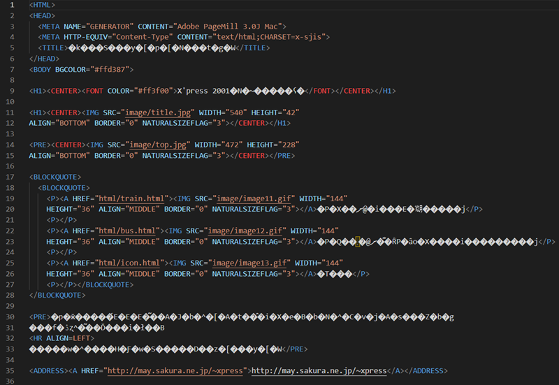
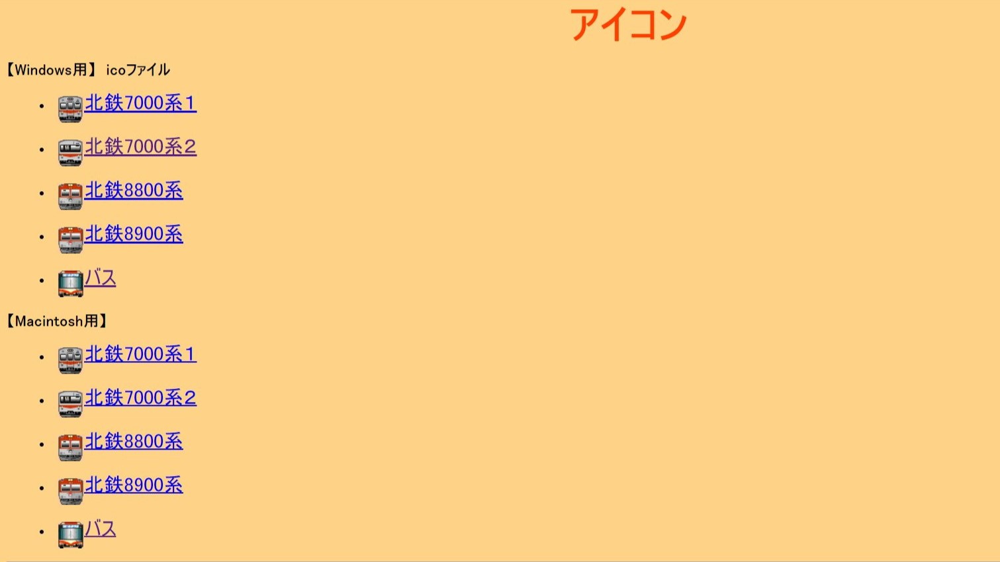
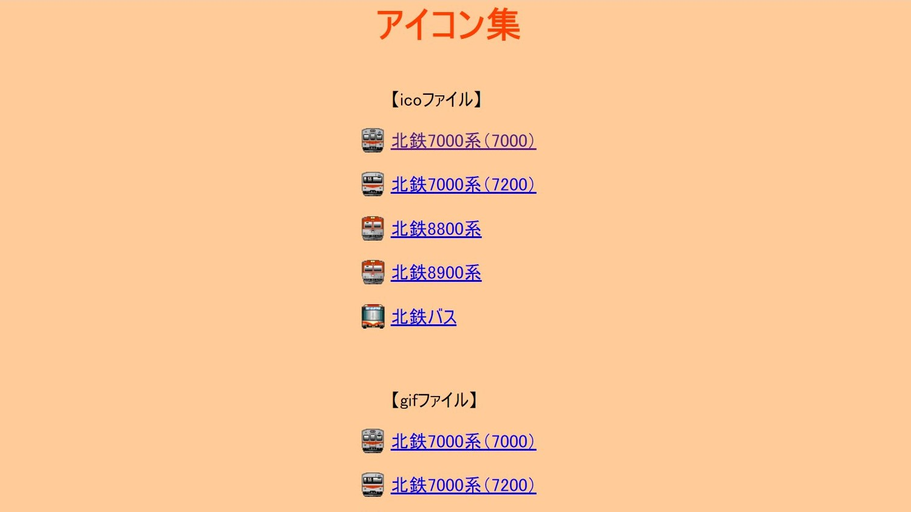

このページについて
このページは元々，金沢大学・金沢工業大学鉄道愛好会が発行している会誌 「X’Press」 の2001年号にオマケとして付属していたCDのデータだったものです．
既に発行から20年以上が経過していますが，先日弊会の備品の中から偶然CDが発掘され，この度当ホームページにて金沢大学・金沢工業大学鉄道愛好会から正式な許可を得て公開するに至ったのです．
...と，そんなこんなで元のCDからの移植作業が始まったのですが，これがなかなか一筋縄ではいかないのでした...
元のCDに同梱されていたHTMLファイルの最終更新日は2001年12月．同じHTMLファイルとはいえ，22年も経てば書き方がかなり違います．
その中でも移植時に一番手こずったのが「文字コードの違い」です．
こちらの画像を見てください．これは元のCDに同梱されていたINDEX.HTMLをVSCodeで閲覧した時の画面です．

はい．なんかめちゃくちゃ文字化けしているのがわかるでしょうか？
これは「文字コード」の違いによって起きるものです．今から約20年前の2001年，日本語の文字コードは「SHIFT-JIS」が主流でした．当時は「MS漢字コード」とも呼ばれ，WindowsやMS-DOS等，多くのOSの標準文字コードとなっていました．
しかし時は流れて2023年，SHIFT-JISはすっかり廃れ，今や日本語の文字コードは「UTF-8」が主流となっています．
同じ日本語でも，文字コードが違えば文字化けしてしまい読むことはできません．そこでまずはこの文字化けを直すところから移植作業は始まりました．
んで，「どうせ文字化け直すなら，ついでにページレイアウトもいい感じにリメイクしちゃおう！！」ということになりまして，（元となったページの雰囲気を残しつつ）ちょこちょことページレイアウトのリメイクも同時進行で行っていきました．

↑元々のCDに同梱されていたファイルはこんな感じ．

↑リメイクしてこんな感じになりました．結構いい感じじゃないですか？
（あまり技術的なことを多く話し過ぎるとボロが出て，プロの方からお叱りを受けそうなのでこのくらいで...）
その他にも画像リンクの修正や一部コンテンツの追加など，紆余曲折あって完成した「X'press 2001年特別付録 北陸鉄道ペーパークラフト集CD（リメイク版）」，ペーパークラフトやアイコン画像等コンテンツが盛りだくさんなので，ぜひ隅々まで閲覧していってください！！！！！
「X'Pressトップページ」に戻る